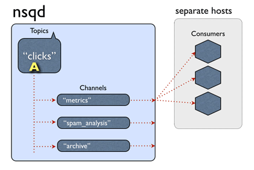

nsqd启动流程
进入到./apps/nsqd/目录，可以看到里面有个nsqd.go文件，这个就是nsqd程序的入口代码文件。首先看main函数，很简单，直接调用svc.Run函数启动nsqd。svc.Run函数定义在vendor/github.com/judwhite/go-svc/svc目录下，有windows版本和其他版本，非windows环境下，使用svc_other.go版本。Run函数第一个参数是Service类型的interface，定义在scv.go。Service类型包含3个接口函数，分别是Init,Start和Stop。Run除了第一个参数外，其他参数是可以0-N个os.Signal。Run函数首先通过Init函数根据环境变量进行初始化工作，主要针对windows版本，other版本是默认返回nil。然后调用Start函数启动nsqd程序，通过signal.Notify阻塞主进程，当捕获到相应的中断信号时，主进程继续执行，调用Stop函数进行nqsd程序退出工作。signal.Notify这里设置了syscall.SIGINT（ctrl-c）终止程序中断和syscall.SIGTERM(kill)终止程序信号。
|
|
apps/nsqd/nsqd.Start
nsqd主进程通过scv.Run函数调用Start接口函数启动nsqd子进程。Start函数首先做一些加载配置和设置标识的初始化和一些参数检查，然后通过nsqd/nsqd.New创建*NSQD并对数据进行一些初始化赋值的工作，nsqd/nsqd.LoadMetadata加载上次的topics和channels，nsqd/nsqd.PersistMetadata进行topics和channels持久化工作，最后通过调用nsqd/nsqd.Main处理tcp、http、https的服务启动。
|
|
nsqd/nsqd.Loadmetadata
Loadmetadata首先设置isLoading标识，然后读取nsqd.dat文件数据。nsqd.dat数据是json格式保存的，取出Topics数据，然后通过GetTopic函数从NSQD中获取对应名字的topic，如果没有则创建新的topic，并启动topic。如果topic是加载数据时创建的，则GetTopic函数里面先不启动，等加载完topic对应channels后再启动。nsqd/topic.GetChannel函数获取对应名字的channel，如果没有则创建新的channel。新创建topic时，会通过go关键字启动新的协程来执行nsqd/topic.messagePump函数，处理接受到的消息。nsqd/topic.messagePump函数一开始会通过for循环执行select消息，通过调用nsqd/topic.Start后才会进入到消息处理的主循环中。
|
|
nsqd/topic.messagePump
当nsqd/topic.Start调用后，messagePump进入了消息主循环。消息主循环主要以下消息：
1:memoryMsgChan – 内存消息(通过调用nsqd/topic.PutMessage函数写入的数据)
2:backendChan – 缓存消息(当memoryMsgChan满的时候，缓存的数据)
3:channelUpdateChan – channel更新，比如新增和删除channel
4:pauseChan – 暂停消息
5:exitChan – 退出消息
消息主循环先拿memoryMsgChan里面的消息，如果没有则拿backendChan里面的消息。所以如果消息一旦进入了backendChan，那么会一直等memoryMsgChan的所有消息处理完了，才会从backendChan拿出来处理。topic收到消息的时候，会把消息转发给所有的channels。channels消息处理类似memoryMsgChan，也有对应的memoryMsgChan和backendChan。

|
|
nsqd/nsqd.Main
nsqd/nsqd.Main函数启动了nsqd的tcp，http和https服务。tcp服务通过调用protocol.TCPServer函数通过for循环来等待新的tcp链接，代码实现在internal/protocol/tcp_server.go。tcp服务收到client的tcp连接后，通过go启动新的协程来处理client，然后继续等待新的tcp连接。
|
|
结束语
至此，nsqd进程启动完毕。